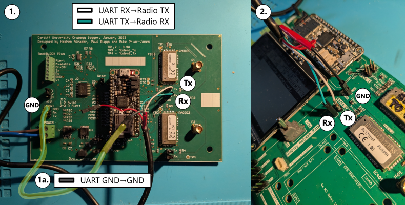
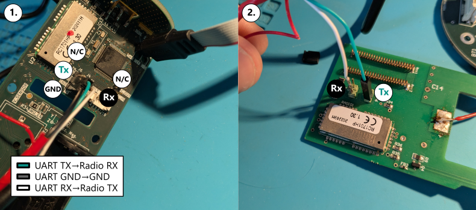
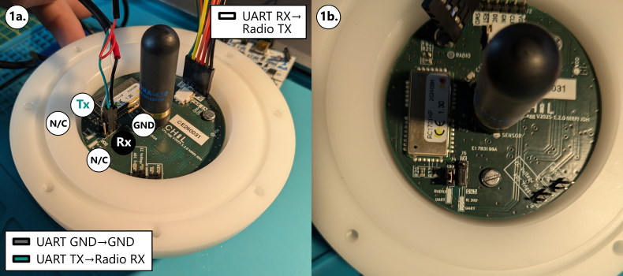
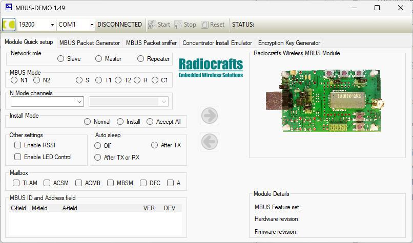
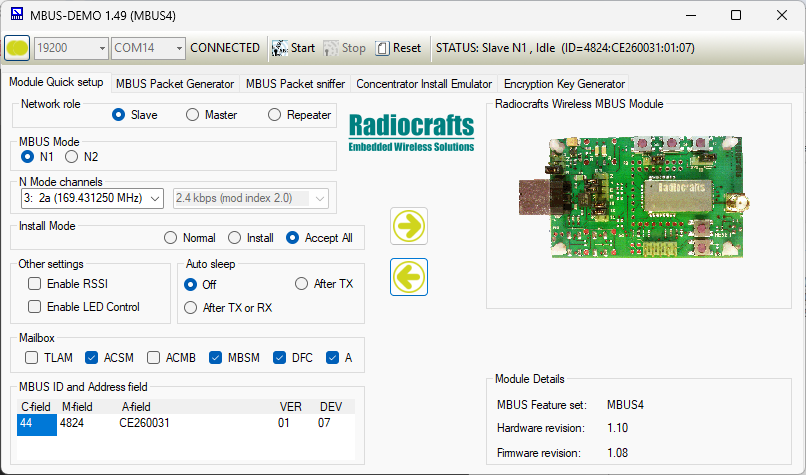
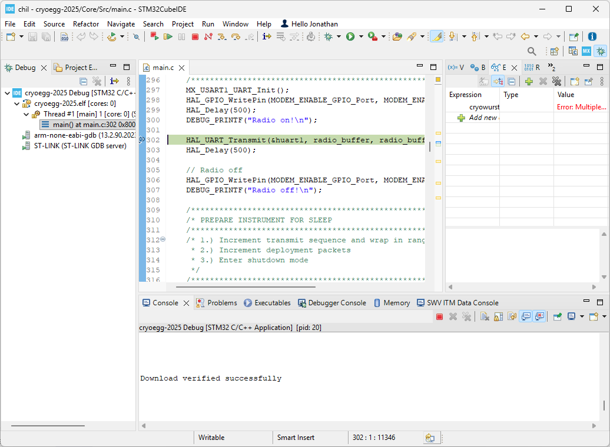
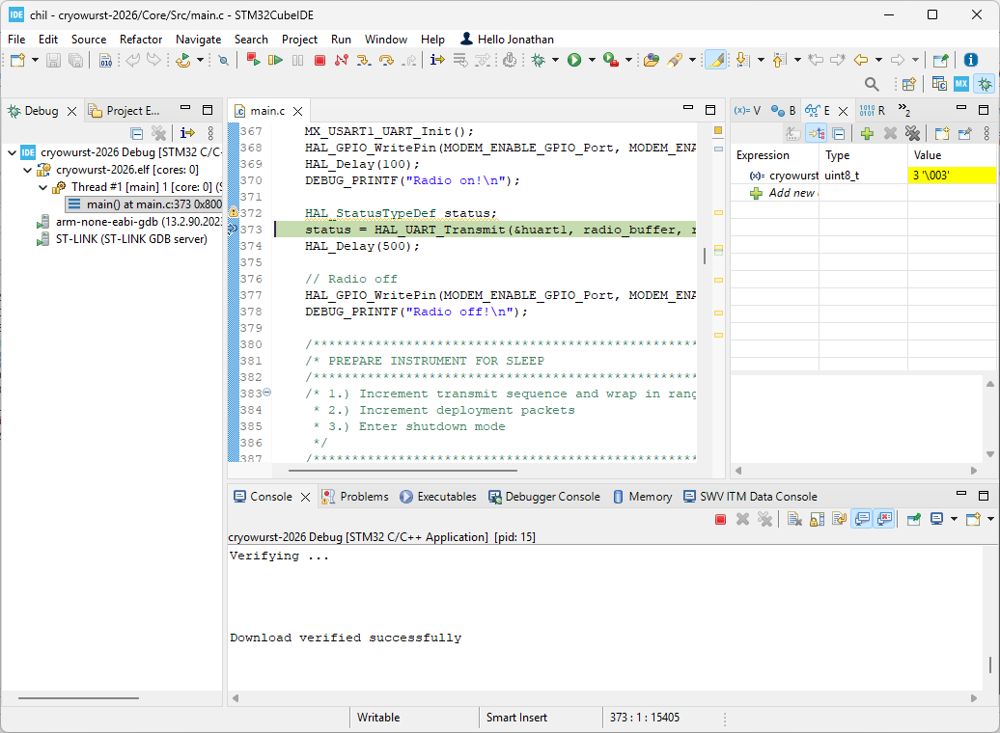
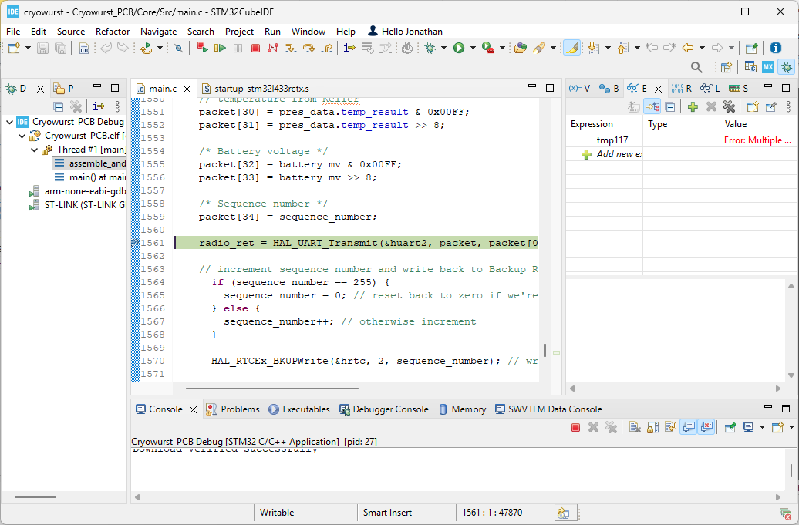

Radio modem configuration#
This section describes how to use a USB to UART modem to reprogram the RC1701HP-MBUS4 radio module used in CHIL instruments and dataloggers. There are several reasons that you may want to reprogram the radio module:
Update the four byte ID associated with the instrument (i.e.
0xCE123456).Change the radio channel to mitigate risk of interference.
Advanced use: changing the receiver mode.
The basic steps in reprogramming the radio modem are as follows:
Connect a USB to UART modem to your PCB and identify which COM port it is using. We recommend the Pimoroni CAB0400.
Identify the correct transmit (Tx), receive (Rx) and ground (GND) connections on the instrument or receiver you are looking to reprogram (see below for details).
If reprogramming a receiver, switch on the power.
If using an instrument, see instructions below.
Open the MBUS-DEMO software, connect to the COM port assigned to your USB to UART modem.
Load settings from the device, modify them and transfer them back.
Identifying Tx and Rx pins#
Connecting the UART to USB cable correctly is key to reprogramming the radio modems. The steps below indicate the correct way to connect the UART to USB modem.
Tip
If you are not sure which cable from the UART to USB modem is transmit (Tx) and receive (Rx), try swapping them - you will not damage the radio modem.
Dataloggers#
For both versions of the datalogger, the UART connections are located next to each radio modem and are labelled Tx and Rx. Connect the transmit (Tx) from the UART to USB cable to Rx on the datalogger, and connect the receive (Rx) from the UART to USB cable to Tx on the datalogger. Use the pins on the right-hand side of the board.
Note
There is no ground (GND) connection on the 2023 version of the datalogger near the radio modem headers. If your UART to USB cable does not work without a connection to (GND), you will need a 2.54mm pin to socket cable to connect to the top pin of J10 (highlighted in Figure 55.1a).

Fig. 55 UART connections for the 2023 and 2026 dataloggers to program the MBUS receiver.#
Instruments#
Headers J4 and J6 on the Cryowurst are the Tx and Rx connections for the radio modem (Figure 56.1), leave the top pins unconnected (N/C). On the 2023 version of Cryowurst, JP6 and JP7 are the Tx and Rx headers (Figure 56.2).
Note
There is no ground (GND) connection on the 2023 version of the Cryowurst near the radio modem headers. If your UART to USB cable does not work without a connection to (GND), you will need a 2.54mm pin to socket cable to connect to the top pin of J5 (not shown).

Fig. 56 UART connections for the 2023 and 2026 Cryowurst.#
Headers J4 and J6 on the Cryowurst are the Tx and Rx connections for the radio modem (Figure 57.1). Leave the bottom pins unconnected (N/C).

Fig. 57 UART connections for the 2023 and 2026 Cryoegg.#
Program the radio module#
Open the Radiocrafts MBUS-DEMO software and select the COM port associated with the USB to UART cable. Press the yellow button to the left of the baud rate selection (default: 19200) to connect to the USB to UART cable. This will not connect to the radio modem.

Fig. 58 MBUS-DEMO software (uninitialised).#
Datalogger#
The radio modems are always powered on the 2023 version of the datalogger. For the 2026 version of the datalogger, JP602 and JP603 must be positioned to Manual On to power the radio modems.
Fig. 59 MBUS-DEMO connected to the datalogger.#
Use the left-pointing arrow to load the configuration of the radio module. For the receiver. You should verify that the settings match :numref`Figure %s <fig_mbus_config_receiver>` and that the modem is in Master mode.
Instruments#
By default, the radio modems on the CHIL instruments are powered off to save energy. To program the radio module, it is necessary to pause the execution of the instrument firmware when the modem is switched on.
Open the firmware for the instrument you are using and add a breakpoint when the radio modem is enabled. See below for the where to add a breakpoint depending on the instrument type and firmware version.
Follow the steps for programming Cryoegg or Cryowurst.
When the code execution reaches the breakpoint you added, use the left-pointing arrow to load the configuration of the radio module. If the UART to USB cable is connected correctly, you will see a configuration similar to Figure 60. It is important that the network role is Slave. and the MBus mode is N1.

Fig. 60 MBUS-DEMO connected to a CHIL instrument (ID: 0xCE260031).#
Change the desired configuration values.
To upload the new configuration values to the radio modem, press the right pointing arrow.
Cryoegg (2026)#

Fig. 61 Breakpoint location to pause Cryoegg (2026) while the radio modem is enabled.#
Cryowurst (2026)#

Fig. 62 Breakpoint location to pause Cryowurst (2026) while the radio modem is enabled.#
Cryowurst (2023)#

Fig. 63 Breakpoint location to pause Cryowurst (2023) while the radio modem is enabled.#